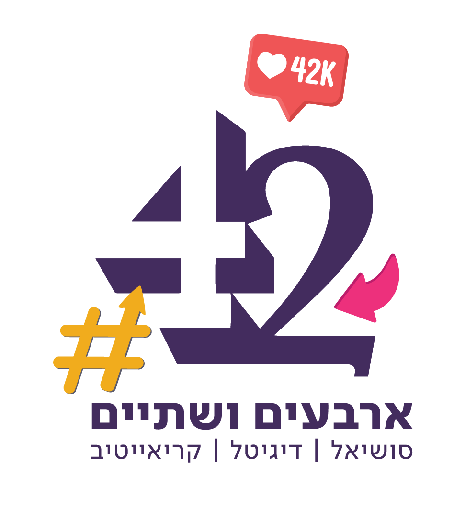

מי שהכי בטוח שהוא מבין את הטכנולוגיה הזו — הוא הראשון שהיא עוקפת.
הAI לא ממציא דברים חדשים — הוא מפשט דברים שפעם היה מורכב מאוד לעשות אותם, או שהיה צריך בשבילם להיות מומחה גדול.
אם מישהו הוא "מומחה גדול" בתחום מסובך — הAI רודף אחריו בצעדי ענק. הוא הפך את המורכבות שנו לנגישה לכולם.
מה שלפני שנתיים דרש 3 כלים, שעות עבודה וידע טכני עמוק — היום נעשה בפרומפט אחד, בעברית, בפחות מדקה.
מי שממשיך לעשות דברים כמו שתמיד עשה — מוצא את עצמו מתחרה עם מישהו שמשתמש ב-AI. זה לא הוגן. זה המציאות.
Deforum + ControlNet + Stable Diffusion + ComfyUI + Python scripts + שעות של קולוריזציה ידנית + קובצי JSON...
אותה תוצאה — פרומפט אחד, בעברית, ב-Gemini. אפס התקנות. אפס ידע טכני.
הרבה דברים שה-AI יודע לעשות (בינתיים) — כדי שנדע לחשוב עליהם כשמייצרים תכנים, מעלים רעיונות ומציעים הצעות ללקוחות.
לא רק מסבירים — מראים. כל יכולת עם הדגמה חיה. אתם מוזמנים לשאול "ואיך עושים את זה בדיוק?" לאורך כל הדרך.
הדרך הקצרה בין "ניסיתי ויצא רע" ל-"ניסיתי ויצא מרשים". טיפים שלמדנו על בשרנו בחודשים האחרונים — בשבילכם.
יש פה משהו שלא ציפיתם לו. לא נגלה עכשיו. נגיע אליו בסוף. רמז: קשור למצגת הזו עצמה.
רגע — לפני שנמשיך יש החלטה קריטית שצריך לקבל
"בינה מלאכותית" זה בוודאות נקבה... אבל "ה-AI יודעת" נשמע מוזר.
בואו נחליט — ההחלטה שלכם תשנה את כל המצגת מעכשיו.
Gemini · Gems · ChatGPT
שפה אחידה, תוכן חכם, הסגנון שלכם — אוטומטי
Gems = פרסונה של לקוח שנשמרת. מגדירים פעם אחת: סגנון, קהל, בטון — ומשם כל שיחה יודעת הכל, גם אחרי חודש.
תדבריף + 3 דוגמאות כתיבה של הלקוח. לא צריך להסביר את השפה — פשוט מראים אותה. Gemini מבין מה רואה.
Gemini כותב בדיוק בסגנון שלו — לא בסגנון "AI מובהק". התוצר נשמע כמו שהלקוח היה כותב אם היה כותב טוב יותר.
Gem + קבצים = אחידות בכל פלטפורמה. אינסטגרם, מייל, מצגת, לינקדאין — אותו קול, בלי מאמץ.
יש ללקוח "ספר מותג" ב-PDF? העלו ישירות לGem. Gemini קורא הכל — טקסט, פלטות צבע, ערכים — ומפנים לתוך כל פרומפט.
העלו: לוגו + 3 דוגמאות כתיבה + "ספר הנחיות השפה" שלהם.
מעכשיו — כל פרומפט כתיבה עם אותו Gem = שפה אחידה אוטומטית.
זה לא קסם. זה תשתית. ותשתית טובה שווה יותר מכל פרומפט חכם.
Gemini Imagen · עריכה חכמה · עקביות ויזואלית
מיצירה מאפס עד הסרת כוכב מביכה
יצירת תמונה מאפס מפרומפט. Inpainting — בחרו אזור בתמונה קיימת, תארו מה שרוצים במקומו, Gemini מחליף בדיוק שם בלי לגעת בשאר.
יצרתם תמונה ב-Flash ויצאה טוב אבל לא מושלמת? לחצו "Redo with Pro" — שדרוג מיידי לאיכות גבוהה יותר, ללא פרומפט חדש.
מעלים תמונה קיימת + נותנים הנחיה = עריכה לפי הוראה. "הסר את הרקע", "שנה את הצבע", "הוסף אדם מימין" — עובד.
אותו Gem שנבנה לכתיבה — עובד גם לתמונות. סגנון ויזואלי, פלטת צבעים, תחושה — מוגדרים פעם אחת, קבועים לתמיד.
כשרוצים עקביות ויזואלית בין כמה תמונות —
בקשו מ-Gemini תמונה אחת עם 4–6 ווריאציות בפריים אחד (פאנל).
אחר כך בקשו לUpscale כל וריאציה בנפרד.
כולן יצאו מאותה "מחשבה ויזואלית" — אחידות מושלמת.
Kling · Veo 3 · תנועה, פיזיקה ואור אמיתיים
מתמונה סטטית לקליפ קולנועי — בלחיצה
תיאור טקסטואלי ← קליפ 5–10 שניות עם פיזיקה ריאלית. מים זורמים, שיער מתנפנף, בד מתנועע — הכל עם הגיון פיזיקלי אמיתי.
תמונת מוצר / פורטרט / רפרנס ← קליפ מותגי. הדמות בתמונה מתחילה לנוע, הרקע מתעורר — אפס צילום.
שליטה מלאה בתנועת המצלמה. Dolly in, pan, orbit, crane — אותן תנועות שמצלמן מקצועי לוקח שעות לתכנן, פה זה dropdown.
קבעו פריים פתיחה ופריים סיום — Kling ממלא את האנימציה באמצע. זה הכלי להדגמות מוצר מרהיבות.
כלי עריכה שמאפשר להחליף אלמנטים בתוך וידאו קיים — בלי לצלם מחדש. בחרתם אזור, תיארתם מה שרוצים, Kling מחליף.
רקע — מהמשרד לחוף הים. מוצר — בקבוק אחד במקום אחר. בגד / צבע — אדום במקום כחול. הכל, בלי גרין-סקרין.
לקוח ביקש לשנות משהו בסרטון? במקום צילום מחדש — פרומפט אחד + כמה דקות. עריכה שלקחה יום — לוקחת 5 דקות.
אותו עקרון כמו Inpainting בתמונות — רק שפה זה עובד על כל פריים בצורה עקבית לאורך כל הקליפ. לא רק תמונה בודדת.
הסאונד נוצר יחד עם הוידאו, לא מודבק אחרי. צלילי סביבה, קולות דמויות, מוזיקה — הכל מסונכרן בדיוק לתמונה.
קבעו פריים פתיחה + פריים סיום — Veo ממלא את האנימציה באמצע. מושלם לסרטוני מוצר עם תנועה מוגדרת.
יצרתם קליפ 8 שניות? בקשו מ-Veo להאריך — הוא ימשיך את הסיפור הלאה, עם אותה דמות ואותו רקע.
אם מייצרים כמה קטעים עם אותה דמות — הקול לא יהיה זהה בין קליפ לקליפ. הפתרון: ElevenLabs STS לדיבוב אחיד. נגיע לזה בפרק הסאונד.
⚠️ שימו לב: הסאונד הנוצר לא יהיה עקבי בין קטעים שונים
1. מחיקת פריים כפול בחיבורים:
כשמחברים שני קטעים שנוצרו עם Start/End Frame — נוצר פריים כפול בנקודת החיבור שגורם לקפיצה. מחיקת פריים אחד ב-CapCut בנקודת החיבור פותרת את זה.
2. Kling Sound-to-Video:
Kling יכול לייצר סאונד אמביינט מותאם לוידאו שלכם — מנתח את הסצנה ומוסיף צלילים שמתאימים לתמונה אוטומטית.
Kling Effects · Motion · שדרוג תוכן קיים
כשאין תקציב לAE — יש AI שעושה את זה בשניות
Kling Effects מוסיף תנועה, חיים ואפקטים סינמטיים לתמונות סטטיות קיימות — ללא ידע טכני, ללא השקעת זמן.
כשצריך: מזג אוויר שאין לכם (שלג, גשם), location שלא נסעתם אליו, סטיילינג שלא ביצעתם, או פריים לילה מתמונת יום.
Kling Effects לא יוצר — הוא מחיה תוכן קיים.
צילמתם? מצוין. עכשיו תנו לו לנשום.
ElevenLabs · Suno · קול, מוזיקה ואפקטים
מדיבוב מקצועי עד שיר שלם — מפרומפט
כותבים טקסט ← מקבלים קריינות. בעברית. בוחרים קול, גיל, אינטונציה. 2 שניות לסקריפט שלם.
מקליטים את עצמכם → ElevenLabs ממיר לקול אחר — בלי לכתוב מחדש. מושלם לדיבוב וידאו Veo/Kling בקול אחיד.
ElevenLabs מבין עברית כולל ניקוד, ניואנסים ואינטונציה. מה שאחרים מייצרים בגנגנה — כאן נשמע אנושי.
תיאור בטקסט → אפקט סאונד מותאם. "חיית ים מוזרה קורסת על רצפה מתכתית" — פשוט כתבו מה שאתם שומעים בראש.
מתיאור טקסטואלי → שיר מלא עם מוזיקה + שירה + מילים. "פופ עברי, אנרגטי, על קיץ בתל אביב" — 30 שניות ← שיר שלם.
מעלים אודיו קיים → Suno מחדש, מסגנן, מוסיף שכבות. קליפ ישן ← גרסה חדשה לגמרי. מבלי לאבד את הרגש המקורי.
קאברים לשירים ידועים, גרסאות אינסטרומנטל, סאונדטרקים לוידאו — כל מה שדרש פרודיוסר ואולפן.
עברית ב-Suno עובדת, אבל עם מבטא זר. הטריק: כתבו מילים עם ניקוד + בקשו "Israeli Hebrew accent". תשמעו הבדל.
הבעיה: Veo 3 מייצר קול שונה בכל קליפ — אי אפשר לצרף קטעים עם אותה דמות מדברת.
הפתרון: הקליטו פעם אחת את הדמות שלכם עם STS ב-ElevenLabs → מעכשיו כל הקטעים מדובבים באותו קול.
תוצאה: 5 קטעי Veo + דיבוב אחיד = פרסומת שלמה.
Hedra · CapCut · שפת גוף, דיבוב, עריכה
מוידאו לפרסומת מוגמרת — בלי סטודיו
Hedra לוקח תמונה סטטית + אודיו ומייצר דמות מדברת עם שפת גוף ריאלית. בלי שחקן, בלי מצלמה, בלי גרין-סקרין.
כתוביות אוטומטיות, מסונכרנות, עם עיצוב מותאם. עברית — כן. 30 שניות לסרטון שלם.
CapCut חותך לרגעי הפסגה בסרטון, מוסיף מוזיקת רקע מסונכרנת, מייצר Reel אוטומטי. אתם מוסרים חומר, הוא עורך.
סרטונים שיובאו מ-TikTok, Instagram, כלי AI — CapCut מוחק watermark אוטומטית. לא צריך להסביר איך.
Reframe, background change, sky replacement — הכל ב-app אחד. CapCut הוא Premiere + After Effects למשתמש הרגיל.
Watermark מ-AI: שמרו את הסרטון מ-CapCut כ-MP4 — ה-Watermark נעלם. לחלופין: לחצו "Remove Watermark" מתחת לכלי AI.
פריים כפול בחיבורים: כשמחברים קטעי Start/End Frame מ-Kling/Veo — מחקו פריים אחד בנקודת החיבור.
קפיצה נעלמת. הסרטון זורם חלק.
ChatGPT כבמאי · Shot list · Storyboard
מרעיון לתסריט קולנועי — בפרומפט אחד
ChatGPT יודע שפת קולנוע. תנו לו רעיון + סגנון ויחזיר shot list מוכן לKling/Veo, עם camera movement, תאורה ואווירה.
ChatGPT · Gemini · גיליון אקסל → תובנות
מדוח ידני לניתוח שכולם מבינים — בשניות
Excel / CSV / PDF ← ChatGPT מנתח, מסכם, מסביר בשפה שלכם. מספיק לשאול "מה מעניין כאן?"
בקשו "צור גרף" — ChatGPT מייצר גרפים קריאים, בוחר את הדרך הנכונה להציג כל נתון. לא Canva, לא Excel מסובך.
"מה הלקוח שהכי פחות קנה? מה ההוצאה הגדולה?" — שאלות בעברית פשוטה על גיליון עם אלפי שורות. תשובה ב-3 שניות.
ChatGPT יכול לכתוב את הדוח בשבילכם — נתון X עלה ב-Y%, מגמה, המלצה לחודש הבא. מExcel לPDF מוצג — 10 דקות.
תניחו שה-AI יודע · עצרו להניח
הכלי הכי חזק — ההנחה שאפשרי
הפתעה שהבטחנו · מה שאתם רואים עכשיו
זה מה שה-AI עשה בשבילנו
כל העיצוב, כל הטקסטים, כל המבנה הנרטיבי — Claude + ChatGPT עשו את רוב העבודה. הכלים שדיברנו עליהם — בפועל.
כמה שעות עבודה → מצגת מלאה. לא "דמו" — התוצר הסופי שאתם קיבלתם עכשיו. זה מה שאפשרי היום.
ה-AI לא החליף את המחשבה. הוא הגביר את היכולת. האסטרטגיה — שלנו. הביצוע — AI. כולם מרוויחים.
לחקור. לנסות. לא לחכות. הכלים מוכנים. השאלה היא — אתם?

42